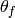
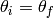

ReflectometryReductionOne dialog.
Table of Contents
Reduces a single TOF/Lambda reflectometry run into a mod Q vs I/I0 workspace. Performs transmission corrections.
| Name | Direction | Type | Default | Description |
|---|---|---|---|---|
| InputWorkspace | Input | MatrixWorkspace | Mandatory | Run to reduce. |
| AnalysisMode | Input | string | PointDetectorAnalysis | The type of analysis to perform. Point detector or multi detector. Allowed values: [‘PointDetectorAnalysis’, ‘MultiDetectorAnalysis’] |
| RegionOfInterest | Input | int list | Indices of the spectra a pair (lower, upper) that mark the ranges that correspond to the region of interest (reflected beam) in multi-detector mode. | |
| RegionOfDirectBeam | Input | int list | Indices of the spectra a pair (lower, upper) that mark the ranges that correspond to the direct beam in multi-detector mode. | |
| I0MonitorIndex | Input | number | Mandatory | I0 monitor workspace index |
| ProcessingInstructions | Input | string | Mandatory | Grouping pattern on workspace indexes to yield only the detectors of interest. See GroupDetectors for details. |
| WavelengthMin | Input | number | Mandatory | Wavelength minimum in angstroms |
| WavelengthMax | Input | number | Mandatory | Wavelength maximum in angstroms |
| WavelengthStep | Input | number | 0.02 | Wavelength rebinning step in angstroms. Defaults to 0.02. Used for rebinning intermediate workspaces converted into wavelength. |
| MonitorBackgroundWavelengthMin | Input | number | Mandatory | Wavelength minimum for monitor background in angstroms. |
| MonitorBackgroundWavelengthMax | Input | number | Mandatory | Wavelength maximum for monitor background in angstroms. |
| MonitorIntegrationWavelengthMin | Input | number | Mandatory | Wavelength minimum for integration in angstroms. |
| MonitorIntegrationWavelengthMax | Input | number | Mandatory | Wavelength maximum for integration in angstroms. |
| DetectorComponentName | Input | string | Name of the detector component i.e. point-detector. If these are not specified, the algorithm will attempt lookup using a standard naming convention. | |
| SampleComponentName | Input | string | Name of the sample component i.e. some-surface-holder. If these are not specified, the algorithm will attempt lookup using a standard naming convention. | |
| OutputWorkspace | Output | MatrixWorkspace | Mandatory | Output Workspace IvsQ. |
| OutputWorkspaceWavelength | Output | MatrixWorkspace | Output Workspace IvsLam. Intermediate workspace. | |
| ThetaIn | Input | number | Optional | Final theta value in degrees. Optional, this value will be calculated internally and provided as ThetaOut if not provided. |
| ThetaOut | Output | number | Calculated final theta in degrees. | |
| NormalizeByIntegratedMonitors | Input | boolean | True | Normalize by dividing by the integrated monitors. |
| CorrectDetectorPositions | Input | boolean | True | Correct detector positions using ThetaIn (if given) |
| FirstTransmissionRun | Input | MatrixWorkspace | First transmission run, or the low wavelength transmission run if SecondTransmissionRun is also provided. | |
| SecondTransmissionRun | Input | MatrixWorkspace | Second, high wavelength transmission run. Optional. Causes the FirstTransmissionRun to be treated as the low wavelength transmission run. | |
| Params | Input | dbl list | A comma separated list of first bin boundary, width, last bin boundary. These parameters are used for stitching together transmission runs. Values are in wavelength (angstroms). This input is only needed if a SecondTransmission run is provided. | |
| StartOverlap | Input | number | Optional | Start wavelength for stitching transmission runs together |
| EndOverlap | Input | number | Optional | End wavelength (angstroms) for stitching transmission runs together |
| StrictSpectrumChecking | Input | boolean | True | Enforces spectrum number checking prior to normalization |
| CorrectionAlgorithm | Input | string | None | The type of correction to perform. Allowed values: [‘None’, ‘PolynomialCorrection’, ‘ExponentialCorrection’] |
| Polynomial | Input | dbl list | Coefficients to be passed to the PolynomialCorrection algorithm. | |
| C0 | Input | number | 0 | C0 value to be passed to the ExponentialCorrection algorithm. |
| C1 | Input | number | 0 | C1 value to be passed to the ExponentialCorrection algorithm. |
| ScaleFactor | Input | number | Optional | Factor you wish to scale Q workspace by. |
| MomentumTransferMinimum | Input | number | Optional | Minimum Q value in IvsQ Workspace. Used for Rebinning the IvsQ Workspace |
| MomentumTransferStep | Input | number | Optional | Resolution value in IvsQ Workspace. Used for Rebinning the IvsQ Workspace. This value will be made minus to apply logarithmic rebinning. If you wish to have linear bin-widths then please provide a negative DQQ |
| MomentumTransferMaximum | Input | number | Optional | Maximum Q value in IvsQ Workspace. Used for Rebinning the IvsQ Workspace |
Reduces a single TOF reflectometry run into a mod Q vs I/I0 workspace. Performs transmission corrections. Handles both point detector and multidetector cases. The algorithm can correct detector locations based on an input theta value.
Historically the work performed by this algorithm was known as the Quick script.
If MonitorBackgroundWavelengthMin and MonitorBackgroundWavelengthMax are both set to 0, then background normalization will not be performed on the monitors.
The default analysis mode is PointDetectorAnalysis. For PointAnalysisMode the analysis can be roughly reduced to IvsLam = DetectorWS / sum(I0) / TransmissionWS / sum(I0). For MultiDetectorAnalysis the analysis can be roughly reduced to IvsLam = DetectorWS / RegionOfDirectBeamWS / sum(I0) / TransmissionWS / sum(I0). The normalization by tranmission run(s) is optional. If necessary, input workspaces are converted to Wavelength first via ConvertUnits v1.
IvsQ is calculated via ConvertUnits v1 into units of MomentumTransfer. Corrections may be applied prior to the transformation to ensure that the detectors are in the correct location according to the input Theta value. Corrections are only enabled when a Theta input value has been provided.
Transmission correction is a normalization step, which may be applied to both PointDetectorAnalysis and MultiDetectorAnalysis reduction.
Transmission runs are expected to be in TOF. The spectra numbers in the Transmission run workspaces must be the same as those in the Input Run workspace. If two Transmission runs are provided then the Stitching parameters associated with the transmission runs will also be required. If a single Transmission run is provided, then no stitching parameters will be needed.
If no Transmission runs are provided, then polynomial correction can be performed instead. Polynomial correction is enabled by setting the CorrectionAlgorithm property. If set to PolynomialCorrection it runs the PolynomialCorrection v1 algorithm, with this algorithms Polynomial property used as its Coefficients property.
If the CorrectionAlgorithm property is set to ExponentialCorrection, then the ExponentialCorrection v1 algorithm is used, with C0 and C1 taken from the C0 and C1 properties.
Detector Position Correction is used for when the position of the detector is not aligned with the reflected beamline. The correction algorithm used is SpecularReflectionPositionCorrect v1 which is a purely vertical position correction.
ReflectometryReductionOne contains 2 post-processing options that will be applied to the IvsQ workspace. These two options are Scale and Rebin.
To Rebin your IvsQ workspace you will have to provide values for the following properties: MomentumTransferMinimum, MomentumTransferStep and MomentumTransferMaximum. These values will be appended to each other to form your Rebin v1 Params. These values correspond to your MinimumExtent, BinWidth and MaximumExtent respectively.
If you provide a positive MomentumTransferStep value then the algorithm will automatically negate this value which will allow for Logarithmic Rebinning. Alternatively, a negative MomentumTransferStep will result in Linear Rebinning. More details about the Rebinning process can be found in the documentation for Rebin v1.
If no values are provided for MomentumTransferMinimum and MomentumTransferMaximum then the algorithm will attempt to calculate these values by using the equations below:
Where  is the minimum extent of the IvsLambda Workspace and
is the minimum extent of the IvsLambda Workspace and  is the maximum extent of the IvsLambda Workspace.
is the maximum extent of the IvsLambda Workspace.
If you have not provided a value for MomentumTransferStep then the algorithm will use CalculateResolution v1 to calculate this value for you.
To apply a scaling to the IvsQ workspace that has been produced by the reduction, you will need to provide a value for the ScaleFactor property in the algorithm. The default for this value is 1.0 and thus no scaling is applied to the workspace. The scaling of the IvsQ workspace is performed in-place by the Scale v1 algorithm and your IvsQ workspace will be set to the product of this algorithm.
In the workflow diagram above, after we produce the IvsLambda workspace, it may be necessary to rotate the position of the source to match the value of ThetaOut ().
Below we see the typical experimental setup for a Reflectometry instrument. The source direction (Beam vector) is along the horizon. This setup is defined in the Instrument Defintion File
and this instrument setup will be attached to any workspaces associated with that instrument.
When we pass the IvsLambda workspace to ConvertUnits v1 to produce an IvsQ workspace, ConvertUnits v1 will assume that  is the angle between the Beam vector and
the sample-to-detector vector. When we have the typical setup seen below, will be exactly half the value we wish it to be.
is the angle between the Beam vector and
the sample-to-detector vector. When we have the typical setup seen below, will be exactly half the value we wish it to be.

We rotate the position of the Source (and therefore the Beam vector) in the Instrument Defintion associated with the IvsLambda workspace
until the condition  is satisfied. This will achieve the desired result for (see below for rotated source diagram).
After ConvertUnits v1 has produced our IvsQ workspace, we will rotate the position of the source back to its original position so that the experimental setup remains unchanged for other
algorithms that may need to manipulate/use it.

Example - Reduce a Run
run = Load(Filename='INTER00013460.nxs')
# Basic reduction with no transmission run
IvsQ, IvsLam, thetaOut = ReflectometryReductionOne(InputWorkspace=run, ThetaIn=0.7, I0MonitorIndex=2, ProcessingInstructions='3:4',
WavelengthMin=1.0, WavelengthMax=17.0, WavelengthStep=0.05,
MonitorBackgroundWavelengthMin=15.0, MonitorBackgroundWavelengthMax=17.0,
MonitorIntegrationWavelengthMin=4.0, MonitorIntegrationWavelengthMax=10.0 )
print "The first four IvsLam Y values are: [ %.4e, %.4e, %.4e, %.4e ]" % (IvsLam.readY(0)[0], IvsLam.readY(0)[1], IvsLam.readY(0)[2], IvsLam.readY(0)[3])
print "The first four IvsQ Y values are: [ %.4e, %.4e, %.4e, %.4e ]" % (IvsQ.readY(0)[0], IvsQ.readY(0)[1], IvsQ.readY(0)[2], IvsQ.readY(0)[3])
print "Theta out is the same as theta in:",thetaOut
Output:
The first four IvsLam Y values are: [ 0.0000e+00, 0.0000e+00, 4.9588e-07, 1.2769e-06 ]
The first four IvsQ Y values are: [ 6.2230e-04, 7.7924e-04, 9.1581e-04, 1.0967e-03 ]
Theta out is the same as theta in: 0.7
Categories: Algorithms | Reflectometry